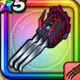

冥獣のツメ
攻略班 7.0点 / ウィングブロウまわしげり裂鋼拳超しんくうげりデーモンハント※錬成で強化可能
くわしい特徴
【レベル別習得スキル】 Lv1すばやさ+5【レンジャー】 Lv1ウィングブロウ（消費MP：3）風のやいばで敵1体に威力65%のバギ属性体技攻撃を2回する Lv10まわしげり（消費MP：8）足で周囲をなぎはらい敵全体に威力110%の体技ダメージを与える Lv15裂鋼拳（消費MP：12）マシン系に威力180%、それ以外の系統には120%の斬撃攻撃を2回する Lv20超しんくうげり（消費MP：20）真空の刃と共に蹴りを放ち、敵全体に威力190%のバギ属性体技ダメージを与える Lv30デーモンハント（消費MP：20）300%ドルマ属性体技ダメージを与え、猛毒付与。猛毒時なら420%ドルマ属性体技ダメージを与え、猛毒を解除 Lv35悪魔系へのダメージ+5% Lv40悪魔系へのダメージ+5% Lv45攻撃時+2%の確率で猛毒を与える Lv50攻撃力+12錬成スキル改1ゾンビ系へのダメージ+10%改2デーモンハント改（消費MP：29）390%ドルマ属性体技ダメージを与え、猛毒付与。猛毒時なら450%を与える改3悪魔系へのダメージ+10%改4錬成ぶき特別演出解放・メガモン討伐結果発表時に特別演出が追加・武器の見た目に特別なエフェクトが追加 【限界突破スキル】 1凸スキルの斬撃・体技ダメージ+5% 2凸スキルの斬撃・体技ダメージ+5% 3凸スキルの斬撃・体技ダメージ+5% 4凸スキルの斬撃・体技ダメージ+5%